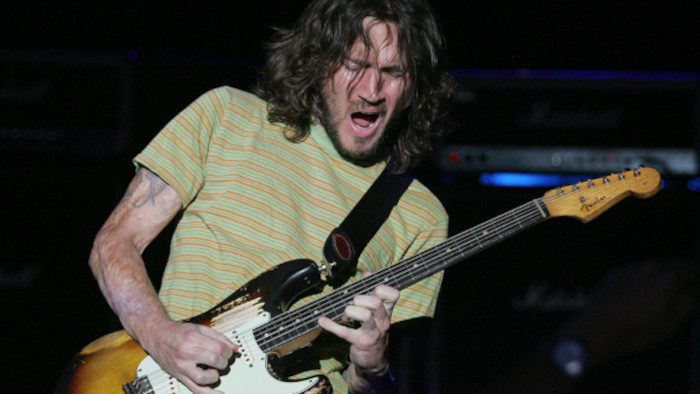

Tudo sobre a vida de Frusciante
John Anthony Frusciante, nascido em Queens, Nova Iorque, em 5 de março de 1970. Considerado o 40º guitarrista da história pela revista mais famosa de rock, Rolling Stone. Mas, além de guitarrista, ele é sintetista, cantor, compositor, pintor e produtor musical nos Estados Unidos. O CARA É F*DA! Ele é o guitarrista da banda Red Hot Chili Peppers e já participou da gravação de sete álbuns com eles, ( Mother's Milk, Blood Sugar Sex Magik, Californication, By The Way, Stadium Arcadium, Unlimited Love e Return of the Dream Canteen ). O John entrou para os Red Hot Chili Peppers quando tinha apenas 18 anos, marcando presença no álbum "Mother's Milk" lá em 1989. O álbum seguinte, "Blood Sugar Sex Magik", foi um p*ta sucesso para a banda, viajando muito para fazer shows.
Como disse antes, - "Blood Sugar Sex Magik", foi um p*ta sucesso para a banda, viajando muito para fazer shows - , por conta disso, foi quando John – que, até então, tinha um histórico de sobriedade – foi apresentado às drogas... John reconhece que começou a usar drogas com o intuito de se entrosar. E foi uma experiência sem volta pelos anos que se seguiram: o guitarrista se tornou dependente de heroína e isso começou a comprometer o seu dia-a-dia.
Paralelamente, outro problema, de natureza musical, começou a emergir: John Frusciante preferia produzir em estúdio do que embarcar em longas turnês. Isso já o deixou desconfortável durante a turnê de “Mother’s Milk”.
Diante de tudo isso, John Frusciante não soube lidar com o próprio sucesso. Ele dizia que a banda era “popular demais” e que não precisava daquele nível de reconhecimento – ficaria contente em tocar apenas em pequenas casas de shows. Em vez de optar por sair do Red Hot Chili Peppers, em prol de sua saúde e sanidade, Frusciante seguiu como uma putaria para os demais colegas. Durante os shows, errava algumas músicas de propósito, tocava todo drogado e chapado só para implicar com os integrantes. Tomado pelas drogas, John, provavelmente, não percebia que estava sendo inconveniente.
Uma das mais icônicas tentativas de sabotagem por parte dele aconteceu durante o evento “Saturday Night Live”, exibido em fevereiro de 1992. Ele fodeu foi tudo, tocou a música com as notas todas erradas, tacava distorção no meio do nada, aumentou ele mesmo o som do microfone dele e ficou gritando e os carai tudo.
O Anthony Kiedis, vocalista, foi o cara que se fodeu na performance, ficou puto pra carai. Porque tinha que manter o vocal certinho mesmo quando a música tava meio perdida no tom ou no ritmo. E a explicação dele pra esse momento é simplesmente sensacional. Ele falou: "Parecia que eu tava sendo esfaqueado nas costas e enforcado até a morte na frente de todo mundo nos Estados Unidos, enquanto o Frusciante tava lá no cantinho, na sombra, parece que ele tava fazendo de propósito so pra me fuder.". "Desde então, ouvi dizer que o John estava usando heroína durante esse show", ele escreve, "mas ele poderia muito bem estar em outro planeta, porque começou a tocar umas coisas que eu nunca tinha ouvido na minha vida. Eu não tinha ideia de qual música ele estava tocando ou em que tom estava. Parecia que ele estava em um mundo diferente."
O negócio foi de base mesmo em 7 de maio de 1992, do outro lado do mundo. O John Frusciante se negou a subir no palco com a banda numa cidade no Japão. Os outros tiveram que convencê-lo a fazer o show, mas logo depois disso, ele vazou da banda. A turnê pelo Japão já tava mostrando claramente os problemas do John. O cara se isolou de todo mundo e passava o tempo só com a namorada. E pra piorar, o consumo de heroína e cocaína tava só aumentando.
Depois de sair do Chili Peppers, o John afundou numa deprê. Tentou entrar nos Meat Puppets, tentou entrar na pintura e fez umas músicas novas. Lançou dois álbuns solo, sendo que um deles, o "Smile from the Streets You Hold" (1997), ele confessou que gravou só pra conseguir dinheiro pra comprar mais droga. É, a situação tava bem complicada.
O vício do John Frusciante ficou fora de controle nos anos seguintes. Ele basicamente se trancou em casa, em Hollywood Hills, que era tipo um "chiqueiro" – sempre bagunçada e com as paredes todas fudidas, tem documentário. A saúde dele tava indo por água abaixo, tipo, o cara tava descrito como "um esqueleto coberto de pele". Além da heroína, ele tava viciado em álcool, cocaína e crack.
No final de 1996, decidiu que queria dar um fim nesse vício todo. Só que não era tão simples assim: só em janeiro de 1998 é que a putaria da de recuperação começou, quando ele foi internado numa clínica de reabilitação. Lá, descobriram que ele tava com uma infecção na boca que podia até matar ele. Pra resolver, teve que arrancar todas as raízes dos dentes e colocar uns implantes no lugar.
Em fevereiro de 1998, Frusciante recebeu alta e deu início à sua nova vida. Na mesma época, o Red Hot Chili Peppers havia demitido Dave Navarro - guitarrista que o substituiu e fez um álbum com a banda - e estava prestes a encerrar suas atividades. A banda se alinhou e John voltou para a banda que, nos anos seguintes, teve o seu verdadeiro auge em termos de popularidade.
Em 1999, a banda solta o álbum "Californication", marcando o retorno do Frusciante. Foi um sucesso monstruoso em vendas, fama e os carai, conquistando o mundo inteiro. Nos anos que seguiram, John fez turnês e também se dedicou a lançar álbuns solo. Em 2002, saiu o álbum "By The Way", que foi bem elogiado pela crítica, mas nem todo mundo curtiu muito, porque tinha uma vibe que se afastou pra caramba daquele som "funk" clássico da banda no começo da carreira, com hits como "Dosed", "The Zephyr Song", "Can't Stop", "Venice Queen", "Throw Away Your Television", e por aí vai.
Em 2006 o álbum "Stadium Arcadium" é lançado, o MAIS FODA DE TODOS, sendo o 9° álbum de estúdio dos Chili Peppers. Seus principais hits são "Dani California","Desecration Smile", "Snow ((Hey Oh))", "Tell Me Baby", "She´s only 18", "Readymade", "Turn it again", entre outros.
Em 2009, enquanto o Red Hot Chili Peppers curtia as férias, o guitarrista John Frusciante meteu um álbum solo novinho. Chamaram de "The Empyrean", (GANHEI O VINIL :D) e ele foi lançado em 20 de janeiro de 2009, pela gravadora americana Record Collection. As músicas foram gravadas entre dezembro de 2006 e março de 2008. No álbum, rolou a participação especial de dois caras bem conhecidos: Johnny Marr, ex-guitarrista dos Smiths, e o baixista Flea, que é amigo do Frusciante no RHCP.
Um dos hits do "The Empyrean" é a música "Unreachable". O próprio John colocou ela lá no seu Myspace antes mesmo do álbum ser lançado. O John curte muito o álbum, falou que acha todas as músicas ótimas e que ouve o CD várias vezes por dia, porque traz uma vibe psicodélica muito louca.
Em 15 de dezembro de 2019, - lembro exatamente do momento até hoje - o Red Hot Chili Peppers do nada anuncia no Instagram a saída de Josh Klinghoffer e o retorno de John Frusciante pela segunda vez à banda. A mensagem destaca o respeito por Klinghoffer e a alegria pela volta de Frusciante.
Em janeiro de 2020, Chad Smith, baterista, confirma que a banda está trabalhando em um novo álbum com Frusciante, o primeiro desde "Stadium Arcadium" (2006). Em 8 de fevereiro de 2020, Frusciante faz seu primeiro show desde o retorno, homenageando Andy Gill e tocando ao lado de Dave Navarro, com quem tinha uma certa briga.
Em abril de 2022, o Red Hot Chili Peppers lança "Unlimited Love", - lembro que lançou um dia antes do primeiro dia de aula do 9 ano, virei a noite escutando - o décimo segundo álbum da banda desde o retorno de Frusciante. Em outubro do mesmo ano, o grupo apresenta "Return of the Dream Canteen", em que John se insipirou muito no guitarrista Eddie Van Halen.